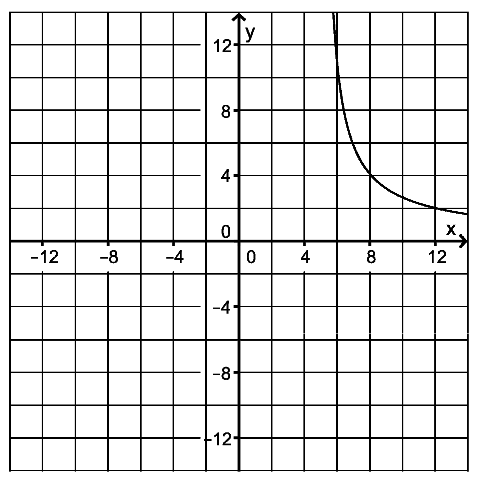

Rational function¶
Problem 1¶
Problem 1
Given the function \(f\) with
and a maximal domain \(D_f\), the figure shows part of its graph \(G_f\).
{kind=link}
Prove that \(D_f=\mathbb{R}\backslash\{-5;5\}\) and that \(G_f\) is symmetric relative to the point \(\left(0\vert0\right)\). Specify the zeros of \(f\) and the equations of the three asymptotes of \(G_f\).
Prove that the slope of \(G_f\) is negative in every point. Calculate the angle between \(G_f\) and the \(x\)-axis at their intersection point.
Draw the missing parts of the graph into the figure above, considering the results obtained so far.
The function \(f^*:x\mapsto f(x)\) with the domain \(]5;+\infty[\) differs from the function \(f\) only in terms of its domain. Explain, why the function \(f\) is not invertible, incontrast to the function \(f^*\). Draw the graph of the inverted function \(f^*\) into the figure.
The graph of \(f\), the \(x\)-axis and the lines given by the \(x=10\) and \(x=s\) with \(s>10\) enclose an area with the content \(A(s)\). Determine \(A(s)\).
Determine \(s\) so that the content of the area from problem 1e equals 100.
Determine the behavior of \(A(s)\) in the limit \(s\rightarrow \infty\).
Solution of part 1a
First we will complete the graph of \(f\) with the help of Sage:
The graph already indicates that the points \(x_1=-5\) and \(x_2=5\) are to be excluded from the domain, because they correspond to the poles of \(f\). We can verify this by inspecting the factorized form of \(f\)
and reading off the zeros of the denominator. The zero of the function is identical to the zero of the numerator, which is located at \(x_0=0\). The symmetry with respect to the origin corresponds to the condition \(f(-x)=-f(x)\), which is obviously fulfilled:
The two asymptotes resulting from the poles are given by the equations \(x=-5\) and \(x=5\). The function \(f\) vanishes in the limits \(x\rightarrow-\infty\) and \(x\rightarrow\infty\), because the order of the polynomial in the denominator exceeds the order of the polynomial in the numerator. Therefore, the third asymptote corresponds to the \(x\)-axis, given by the equation \(y=0\).
We draw the asymptotes into the graph of \(f\).
Solution of part 1b
First, we calculate the derivative of \(f\) using the quotient rule:
As we can see, the numerator is always negative while the denominator is always greater or equal zero. Therefore, the derivative \(f'(x)\) is – except for the zeros of the denominator, which are not included in the domain – always negative.
The graph of \(f'(x)\) confirms this result.
In order to determine the angle between \(G_f\) and the \(x\)-axis at their intersection point, we calculate the slope of \(f\) at the point \(x=0\):
The angle is then given by
We check the result with Sage and draw the tangent of \(f\) at the point \(x=0\).
Solution of part 1c
The graph was already completed in part 1a.
Solution of part 1d
The function \(f\) assigns multiple \(x\)-values to the same \(y\)-values and is therefore not injective on its complete domain. Thus, the function \(f\) is not invertible.
\(f^*\) on the other hand is injective on its complete domain and is therefore invertible. The reversed function \(f^{*-1}\) can be calculated by solving \(y=f^*(x)\) for \(x\). We obtain the quadratic equation
for \(x\), which is solved by
These solutions can also be obtained with Sage:
Due to the domain of \(f^*\), \(f^{*-1}\) can only take values \(\geq5\). Thus, we have to choose the plus sign in the solution given above. The inverse function then reads
We will use Sage to draw \(f^*\) and \(f^{*-1}\).
Solution of part 1e
Due to the fact that \(f\) is always positive for \(x>10\), the described area can be calculated as the integral of the function \(f\) from 10 to \(s\):
We note that the numerator of \(f\) corresponds to the derivative of the denominator up to a constant factor. Therefore, the antiderivative can be expressed in terms of a logarithm:
Sage confirms this solution:
In the following figure, the area is highlighted in yellow. The value of \(s\) can be changed dynamically and the content of the area is calculated and presented under the figure.
Solution of part 1f
The area with the content 100 can be calculated by solving the equation
with Sage. At this point, it is important that we had specified \(s>10\) in the code above. The requested value of \(s\) is found as
Solution of part 1g
In the limit \(x\rightarrow\infty\) the logarithm goes to infinity. Therefore, the content of the area \(A(s)\) also goes to infinity in this case.
We verify this result with Sage:
Problem 2¶
Problem 2
A motorboat cruises with constant motor power along a river. First, the boat travels a distance of 10 km down the river before returning the same way up the river. The proper speed denotes the speed with which the boat would travel on water at rest.
In the following, it shall be assumed that the proper speed of the boat be constant and the water of the river flows at a constant speed of \(5\frac{\mathrm{km}}{\mathrm{h}}\). The time needed for the transposition maneuver shall be neglected.
The total time (in hours) for the boat’s roundtrip, within the model, is given by the term
for \(x>5\). \(x\) denotes the proper speed of the boat in units of \(\frac{\mathrm{km}}{\mathrm{h}}\).
Based on the model, determine the total time in minutes for a journey with the proper speeds \(10\,\frac{\mathrm{km}}{\mathrm{h}}\) and \(20\,\frac{\mathrm{km}}{\mathrm{h}}\).
Explain, why the first and second summand of the term \(t(x)\) describe the time needed to travel down and up the river, respectively.
Explain, why the term \(t(x)\) cannot be used to calculate the total time when \(0<x<5\).
Demonstrate that the terms \(f(x)\) and \(t(x)\) are equivalent.
Describe how one can use the graph in order to get an approximate value for the proper speed of the boat based on the total time taken between 2 and 14 hours. Based on the model, calculate the proper speed of the boat if four hours are needed for the whole journey.
Solution of part 2a
In order to calculate the total time of travel, we simply have to insert the values \(x=10\) and \(x=20\) in \(t(x)\) and multiply the result with 60 to obtain the time in minutes.
We find a total time of
for a proper speed of \(10\frac{\mathrm{km}}{\mathrm{h}}\) and
for a proper speed of \(20\frac{\mathrm{km}}{\mathrm{h}}\). We can verify these results with Sage. Furthermore, we use Sage to plot the total time with respect to the proper speed in the interval between \(10\frac{\mathrm{km}}{\mathrm{h}}\) and \(20\frac{\mathrm{km}}{\mathrm{h}}\).
Solution of part 2b
The time needed to travel a distance \(s\) with constant speed \(x\) can be expressed as \(\frac{s}{x}\). However, the boat travels with its proper speed relative to the surrounding water. Depending on the boat’s direction of travel, its speed relative to the shore is obtained by adding or subtracting the speed of the water to or from the boat’s proper speed. For a distance \(s=10\,\mathrm{km}\) and a flow velocity of \(5\frac{\mathrm{km}}{\mathrm{h}}\), the two summands of the term \(t(x)\) correspond to the time needed to travel down and up the river.
Solution of part 2c
For \(0<x<5\), we can use the first part of the term \(t(x)\) to calculate the time needed for travelling down the river. However, the second term cannot be used to calculate the time needed for the return voyage because the water’s flow velocity exceeds the speed of the boat. Therefore, the boat will not be able to reach the point of departure. \(t(x)\) should therefore yield an infinitely large value.
However, the graph shows that the function yields negative values on the interval \(0<x<5\), which obviously precludes an interpretation in terms of a total time.
Solution of part 2d
Finding the common denominator, we add up the two terms and find
With Sage, we can verify this result by calculating the difference of the two
functions. However, the method rational_simplify() is essential for the
program to work.
Solution of part 2e
The proper speed can be read off the graph by searching the point of the curve where the \(y\)-value matches the specified total time. The corresponding \(x\)-value represents the proper speed of the boat. For a total time of 4 hours one finds a proper speed of approximately \(8\frac{\mathrm{km}}{\mathrm{h}}\). The exact value can be determined by means of the inverse function \(f^{*-1}\) defined in part 1d. We obtain
Sage confirms this result:
The graphic construction can be visualized with Sage as follows: